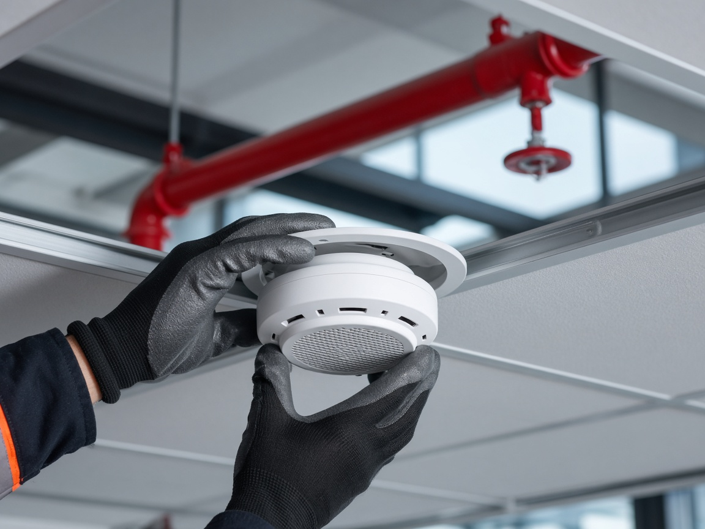
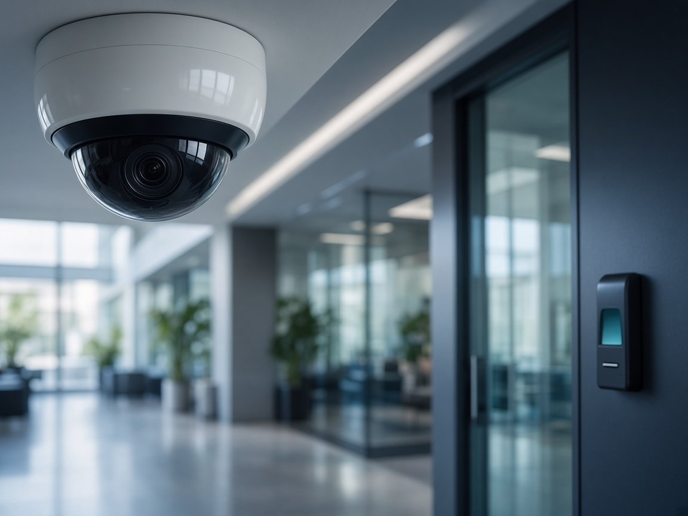
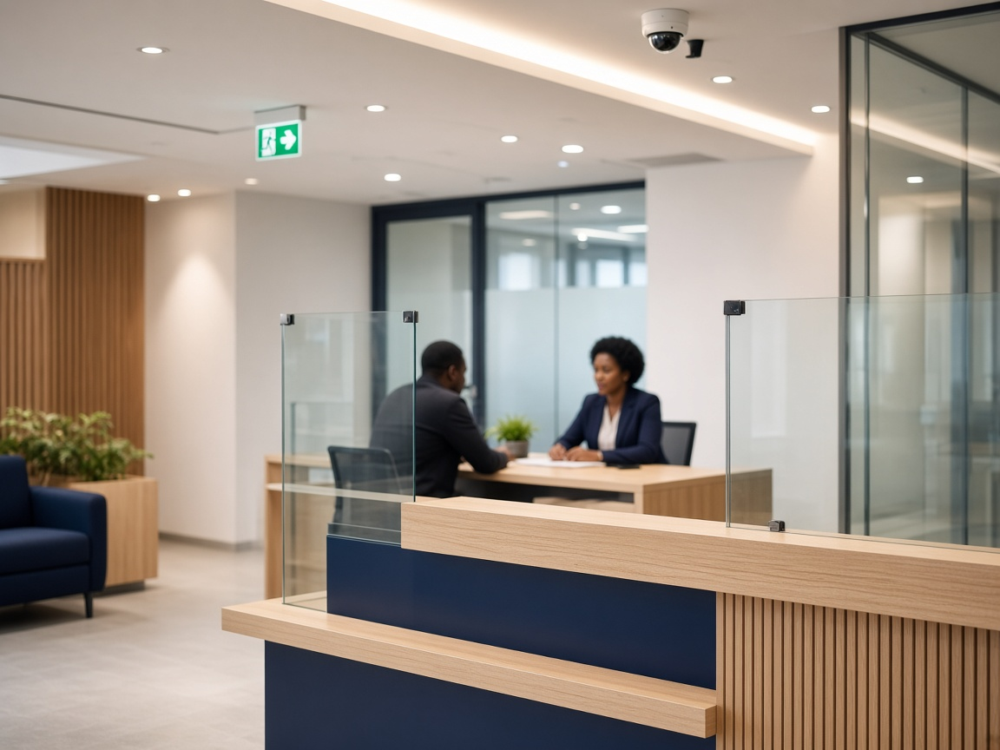
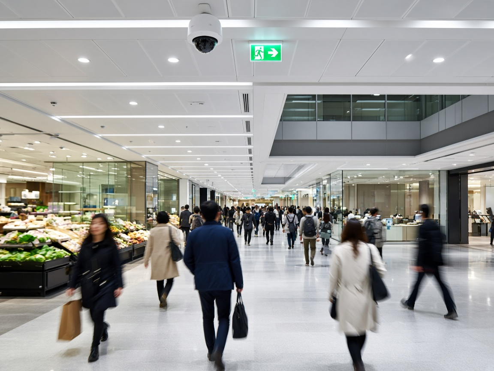

Segurança que resiste ao escrutínio legal e à operação real.
-
100+
Pontos
operacionais -
21
Províncias e
municípios -
4
Instituições
bancárias -
30+
Empresas de
referência
Engenharia de riscos e conformidade com a legislação angolana — incêndio, segurança eletrónica e SHST para operações que não podem parar.
Em Angola, falhar a conformidade custa mais do que o equipamento.
Três riscos que aparecem repetidamente nas operações que auditamos — e que raramente estão no orçamento inicial.
Sanção e interdição
Instalações sem projeto conforme o Decreto Presidencial 195/11 ficam expostas a coimas, embargos e recusa de licenciamento — normalmente descobertos na pior altura, durante uma vistoria.
Paragem operacional
Uma agência fechada, uma loja evacuada ou uma linha parada custa receita por hora. Sistemas mal dimensionados falham exatamente no dia em que são necessários.
Responsabilidade laboral
A Lei Geral do Trabalho 12/23 responsabiliza o empregador pelas condições de SHST. Sem EPI documentado e sinalização adequada, o acidente torna-se também um processo.
Três frentes de engenharia, um único ecossistema de segurança.
Cada solução liga-se a um enquadramento legal específico e a um processo de implementação próprio — não vendemos equipamento isolado.

Segurança Contra Incêndios
Deteção automática, extinção fixa e engenharia de evacuação, projetadas como ecossistema — não como itens avulsos.

Segurança Eletrónica
CCTV com análise de vídeo, controlo de acessos biométrico e deteção de intrusão de alta precisão.
SHST e EPIs
Equipamento de proteção individual certificado, primeiros socorros e sinalização de saúde e segurança.

Primeiro medimos o risco. Só depois falamos de equipamento.
HIRA (Identificação de Perigos e Avaliação de Riscos) é uma análise técnica do local antes de qualquer proposta comercial. É o que separa um projeto de segurança de uma lista de compras.
- Levantamento presencial das instalações e dos processos críticos
- Classificação do risco por probabilidade e severidade
- Confronto com o decreto e a norma aplicáveis à sua atividade
- Prioridade de investimento onde o risco é maior — e não onde a margem é maior
Cada indústria mede segurança de forma diferente.
Um banco pergunta pela continuidade da agência. A indústria pergunta pela conformidade com a LGT. O retalho pergunta pelo fluxo de público.

Setor Bancário
Cobertura de agências, sedes e centralidades — continuidade operacional acima de tudo.

Retalho e Distribuição
Ambientes de elevado fluxo de público, onde deteção rápida evita perdas e paragens.
Indústria, Logística e Saúde
Ambientes de risco elevado onde a conformidade com a SHST é condição de operação, não opção.
Do Luanda Sul à Lunda Norte, com a mesma equipa técnica.
Capilaridade não é vaidade de mapa: é tempo de resposta menor, equipas familiarizadas com cada região e capacidade de executar projetos multi-província para redes bancárias e cadeias de retalho.
Porque a conformidade legal é o produto, não o rótulo.
A Wecomp existe para transformar segurança de centro de custo em vantagem competitiva. Conhecer a empresa →
Domínio dos Decretos Presidenciais 227/19 e 195/11 e da Lei Geral do Trabalho 12/23.
Evite multas, sanções e interdições — operação com segurança jurídica.
Identificação de perigos e avaliação de riscos antes de qualquer implementação.
Investimento alocado onde o risco é maior — sem gastos desnecessários.
Incêndio, SHST e segurança eletrónica a comunicar e a atuar em conjunto.
Visão 360º e resposta automatizada a incidentes.
Atuação comprovada em banca, indústria e logística de referência nacional.
Previsibilidade: a metodologia já foi testada nos ambientes mais complexos.
«Precisamos de um parceiro que responda em Luanda e no Huambo com o mesmo nível técnico — e que documente tudo para a auditoria.»Perfil de cliente-alvo · Direção de Operações, setor bancário
Perguntas que nos fazem antes de avançar.
Trabalham só em Luanda?
Não. A operação cobre mais de 100 pontos em 21 províncias e municípios, incluindo Huambo, Cabinda, Lunda Norte e Benguela. Projetos multi-província são executados com a mesma equipa técnica e o mesmo caderno de encargos.
Fazem projeto ou só instalação?
Ambos, e por esta ordem: levantamento HIRA, projeto conforme o decreto aplicável, implementação, comissionamento documentado e plano de manutenção. Não instalamos sem avaliação prévia do risco.
A consultoria inicial tem custo?
O pedido de consultoria estratégica não obriga a compra. O âmbito e as condições do levantamento são acordados após a primeira reunião de enquadramento.
Como garantem a conformidade legal?
Cada projeto é referenciado ao Decreto Presidencial 195/11, à NP 4386:2014 e à Lei Geral do Trabalho 12/23, conforme o tipo de instalação, e entregue com documentação que serve de suporte em vistoria e auditoria.